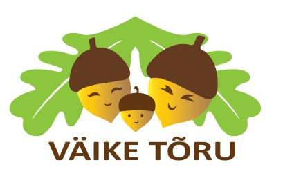

Õpime, kasvame ja tegutseme koos!
Usume, et tugev kogukond sünnib ühistest kogemustest, toetavatest suhetest ja rõõmust koos tegutsemisest. Seetõttu loome võimalusi kohtumiseks, õppimiseks ja inspireerivateks ühistegevusteks igas vanuses peredele.
Laste kooliks ettevalmistamine mängu ja rõõmu kaudu.
Toetavad koolitused lapsevanematele ja peredele.
Loovad ja arendavad tegevused lastele ja noortele.
Vahvad kogukondlikud sündmused kogu perele.
Oled oodatud meie tegevustega liituma – olgu selleks eelkool, huviring, koolitus või mõni vahva pereüritus. Iga uus kohtumine aitab kasvatada hoolivat ja ühtehoidvat kogukonda.
Jälgi meie tegemisi ja tule osalema! Tegevuste, registreerimise ja sündmuste kohta leiad jooksvalt infot meie kodulehelt ja sotsiaalmeediakanalitest.
MTÜ Väike Tõru
Keiu Laur
Telefon: 56 821 585
Kohtumiseni MTÜ Väike Tõru tegevustes! 🌰